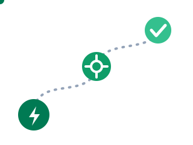

Automatisér din egen hverdag
Din arbejdsplads har allerede robotterne. De ligger i Microsoft 365 og Google Workspace og venter på, at nogen tænder dem.

Hvorfor dette modul?
I modul 3 brugte du AI til enkeltopgaver. Men mange opgaver er ikke enkelte. De gentager sig: den samme mail hver mandag, den samme vedhæftede fil, der skal gemmes, den samme besked, der skal videre til det rigtige team. Den slags skal et menneske ikke gøre i hånden. I dette modul bygger du din første automatisering i de systemer, du allerede har adgang til.
Vælg dit spor
Øvelserne findes i tre udgaver. Vælg det spor, der matcher din arbejdsplads.
Microsoft 365
Du bruger Outlook, Teams og OneDrive. Dit værktøj hedder Power Automate og ligger på make.powerautomate.com.
Google Workspace
Du bruger Gmail, Drive og Google Docs. Dine værktøjer er Gmails egne regler, Google Forms med Sheets og Apps Script til det avancerede.
Blandet eller andet
Ingen af delene, eller lidt af hvert. Så kig på Zapier eller Make, der kobler hundredvis af systemer sammen. Gratisudgaven rækker til øvelserne.
Øvelse 1: Find din gentagelse
- Skriv tre opgaver ned, du har gjort mindst fem gange den seneste måned, og som føles ens hver gang.
- Vælg den af dem, der har en tydelig udløser (der kommer en mail, en fil, et svar i en formular) og en tydelig handling (gem, send, opret, giv besked).
- Sig den højt for din sidemand som én sætning: »Når der sker X, skal der ske Y.« Kan du ikke sige den sætning, er opgaven ikke klar til automatisering endnu.
Øvelse 2: Byg dit første flow
- Spor A: Log ind på Power Automate, og vælg Templates. Søg efter en skabelon tæt på din idé, f.eks. »Save email attachments to OneDrive« eller »Get a notification in Teams«. Aktivér den, og prøv den af med en testmail.
- Spor B: Opret en Google Form (f.eks. en tilmelding), lad svarene lande i et Sheet, og slå notifikationer til. Vil du videre, så bed din AI-assistent skrive et Apps Script, der sender en pæn kvitteringsmail for hvert nyt svar.
- Spor C: Opret en konto på Zapier, og byg en Zap med din udløser og handling, f.eks. »ny række i regneark giver besked i mail«.
- Test flowet mindst tre gange, og prøv bevidst at brække det: hvad sker der ved en tom mail, et mærkeligt filnavn eller et svar med æøå?
Øvelse 3: Sæt AI ind i flowet
Det nye i disse værktøjer er, at AI nu kan være et trin i selve automatiseringen.
- Spor A: Prøv Copilot i Power Automate: beskriv dit flow med almindelige ord, og lad Copilot bygge udkastet. Kig også på AI Builder, der kan læse tekst ud af dokumenter som trin i et flow.
- Spor B: Har din organisation Gemini i Workspace, så prøv »Help me write« i Gmail og Docs som det manuelle AI-trin, og overvej hvor det kunne ligge fast i din proces.
- Spor C: Tilføj et AI-trin i din Zap, f.eks. »opsummér indholdet af mailen, før beskeden sendes videre«.
- Vurdér resultatet med samme blik som i modul 3: hvor god er kvaliteten, og hvor skal et menneske stadig kigge med?
Hvad skete der lige?
Grænserne: governance i den virkelige verden
- Aftal det med IT: Automatiseringer med adgang til post og filer skal din arbejdsplads kende til.
- Personoplysninger: Flows der behandler persondata skal følge samme regler som alt andet. GDPR holder ikke fri, fordi det er en robot.
- Vedligehold: Et flow er en lille ansat. Skriv ned, hvad det gør, og hvem der ejer det, så det ikke bliver et spøgelse, når du skifter job.
Opsamling: den røde tråd indtil nu
- Modul 1: Du kan bygge en prototype med almindelige sætninger.
- Modul 2: Du kan lede en AI-agent og godkende dens arbejde.
- Modul 3: Du kan bruge AI som førsteudkast i dine daglige opgaver.
- Modul 4: Du kan sætte det i system i din egen infrastruktur.
- Og hele vejen igennem: AI'en foreslår, og du bestemmer.
Kilder og videre læsning
- Power Automate-dokumentationen med skabeloner og vejledninger
- Google Apps Script, automatisering i Google Workspace
- Zapier til at koble systemer sammen på tværs
- Datatilsynet om persondata i automatiserede processer